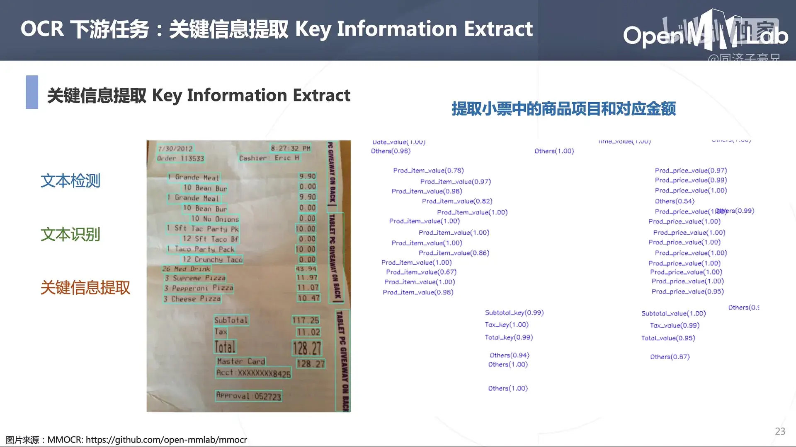
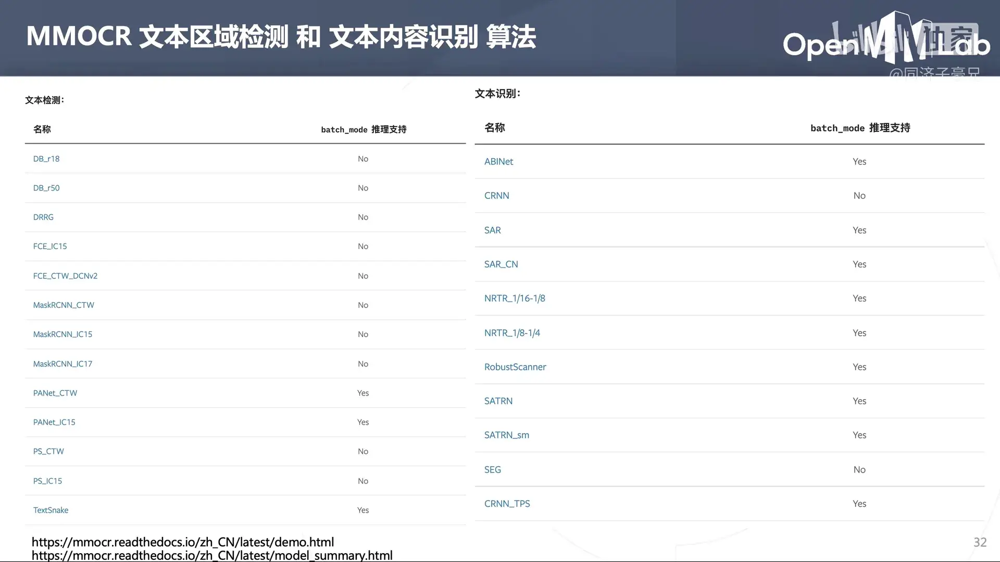

视频
课程
1
文本识别 OCR 神器 MMOCR【OpenMMLab】
OpenMMLab 是一个开源人工智能算法体系，涵盖了多种领域的多种人工智能算法的开源实现。
open-mmlab/mmocr: OpenMMLab Text Detection, Recognition and Understanding Toolbox (github.com) 是 OpenMMLab 下的一个用于 OCR 领域的工具包。包含如下功能：
课程所包含的代码实战教程。
课程中将基于 TextSnake 给文字区域打马赛克。
OCR 即光学字符识别，包含文本区域检测 、文本内容识别 和关键信息提取 。
对于文本识别 ，又分为文档文本识别 和场景文本识别 。
文本图像可能存在噪音、复杂背景、多语种、倾斜、弯曲、多形状和多种字体等属性，是 OCR 的难点与挑战。
一般的 OCR 系统流程分为两种：
学会 MMOCR 能做什么
清华本科特奖的一个项目。

关键信息提取 是 OCR 的下游任务之一。
开源 OCR 算法库：MMOCR
上述下游任务的实现有些需要调用第三方 API，如果我们想使用自己的数据集进行训练、无限量地使用等，开源的 OCR 算法库是一个好的解决方案。
MMOCR 集成了若干顶会所提出的前沿算法。
各种算法的简介和使用方法可以在官方文档中找到。
MMOCR 所包含的文本区域检测算法：
MaskRCNN
PAN
PSENet
DB
TextSnake
DRRG
FCENet
MMOCR 所包含的文本内容识别算法：
CRNN
Robust
Scanner
SAR
SegOCR
Transformer
ABINet
SATRN

MMOCR 包含的 OCR 下游任务——Text Understanding 文本内容理解算法：
Key Information Extraction: SDMG-R 关键信息提取
Named Entity Recognition: Bert-softmax 命名实体识别
MMOCR 依赖于 MMDetection 和 MMCV。
MMOCR 具有模块化设计。
MMOCR 所包含的功能：
数据集
训练
测试
可视化
部署（便于部署到实际应用中）
文本区域检测算法的部署，在 OpenVino 中实时调用摄像头进行场景文本检测。
常用 OCR 数据集和算法评估指标
常用的文本检测和文本识别的数据集。
用于场景文本识别的数据集 MJSynth，合成图片背景相对简单。
数据集由图像和标注两部分组成，对文本检测而言，它的标注范式与图像分割非常类似，都是用多段线去包络一个文字区域。
对于文本内容识别的任务，标注包含文件名和对应的文字内容。
置信度（confidence）
模型在检测过程中，一个目标上可能会出现多个框，每一个框会对应一个 confidence，confidence 阈值就是之后计算 TP，FP，TN，FN 等参数的界限；
交并比（IOU）
计算模型预测出的框和标签中标注的框的 IOU，IOU 用于判定目标是真目标还是假目标，大于 IOU 阈值的框会认定为 True，小于 IOU 阈值的检测框会认定为 False；
计算 TP，FP，TN，FN
TP：大于 IOU 阈值且大于 confidence 阈值（实际是正样本，判定为正样本）；（检测对了）
FP：小于 IOU 阈值且大于 confidence 阈值（实际是负样本，判定为正样本）；（检测错了）
TN：小于 IOU 阈值且小于 confidence 阈值（实际是负样本，判定为负样本）；（不用于计算）
FN：大于 IOU 阈值且小于 confidence 阈值（实际是正样本，判定为负样本）；（没检测出来）
文本检测
基于 IoU 计算（预测区域和标记区域的交并集）
Precision: TP / (TP + FP) 查准率
Recall: TP / (TP + FN) 查全率，TP + FN 为所有正样本的数量
hmean：P 与 R 的调和平均数
文本内容识别
基于混淆矩阵计算（本质上是一个分类问题）
Accuracy
Precision
Recall
基于编辑距离/莱文斯坦距离（Levenshtein）计算
\left.\mathrm{lev}_{a,b}(i,j)=\begin{cases}\max(i,j)\quad\quad\quad\quad\quad\quad\quad\quad\quad\quad\ \ \quad\mathrm{if~min}(i,j)=0\\\\\min\begin{cases}\operatorname{lev}_{a,b}(i-1,j)+1\\\operatorname{lev}_{a,b}(i,j-1)+1\quad\quad\quad\quad\quad\mathrm{otherwise}\\\operatorname{lev}_{a,b}(i-1,j-1)+1_{(a_i\neq b_j)}\end{cases}\end{cases}\right.
MMOCR 中集成了各种评估指标。
2
从 TommyZihao/MMOCR_tutorials: Jupyter notebook tutorials for MMOCR (github.com) 获取文件。
必须完成 A 才可以完成下面的内容！
A 安装配置 MMOCR
虚拟环境安装 jupyter notebook：在 conda 创建的虚拟环境中安装 jupyter 以及使用_conda 虚拟环境怎么连接 jupyter-CSDN 博客
安装 MMOCR：[Paper-MMOCR-A Comprehensive Toolbox for Text Detection, Recognition and Understanding | Zi-Zi’s Journey](/2024/05/30/Paper-MMOCR-A Comprehensive Toolbox for Text Detection, Recognition and Understanding/)
检查安装成功：
1 2 3 4 import torch, torchvisionprint ('Pytorch 版本' , torch.__version__)print ('CUDA 是否可用' ,torch.cuda.is_available())
1 2 Pytorch 版本 1.13.1+cu117
1 2 3 4 5 6 import mmcvfrom mmcv.ops import get_compiling_cuda_version, get_compiler_versionprint ('MMCV 版本' , mmcv.__version__)print ('CUDA 版本' , get_compiling_cuda_version())print ('编译器版本' , get_compiler_version())
1 2 3 MMCV 版本 2.1.0
1 2 3 import mmocrprint ('mmocr 版本' , mmocr.__version__)
B1 预训练模型预测-文本识别
导入工具包：
1 2 3 4 5 6 from mmocr.apis import MMOCRInferencerimport cv2import matplotlib.pyplot as plt
载入模型，实例化 MMOCRInferencer，rec='svtr-small' 使用 SVTR 模型进行文本识别：mmocr/configs/textrecog/svtr at main · open-mmlab/mmocr (github.com) 。
下载 https://download.openmmlab.com/mmocr/textrecog/svtr/svtr-small_20e_st_mj/svtr-small_20e_st_mj-35d800d6.pth 并放到合适位置，使用 rec_weights 设定模型位置（如果没有设定，则它会自动下载到一个地方）
1 infer = MMOCRInferencer(rec='svtr-small' , rec_weights='./models/svtr-small_20e_st_mj-35d800d6.pth' )
1 Loads checkpoint by local backend from path: ./models/svtr-small_20e_st_mj-35d800d6.pth
载入预测图像，就决定是你了：
场景文本识别模型只支持裁剪出文本区域的小图的识别。
1 2 3 4 img_path = './demo/ILoveGZ.png' 1 ])
执行预测：
1 result = infer(img_path, save_vis=True , return_vis=True )
解析预测结果-文本内容及置信度
1 dict_keys(['predictions', 'visualization'])
1 [{'rec_texts': ['igz'], 'rec_scores': [0.9166250427563986]}]
解析预测结果-可视化：
1 2 plt.imshow(result['visualization' ][0 ])
B2 预训练模型预测-文字区域检测
导入工具包：
1 2 3 4 5 6 7 from mmocr.apis import MMOCRInferencerimport cv2import numpy as npimport matplotlib.pyplot as plt
载入模型，实例化 MMOCRInferencer，det='textsnake' 使用 Textsnake 模型进行文本识别：[文本检测模型 — MMOCR 1.0.1 文档 ](https://github.com/open-mmlab/mmocr/tree/main/configs/textrecog/svtr )。
下载 https://download.openmmlab.com/mmocr/textdet/textsnake/textsnake_resnet50-oclip_fpn-unet_1200e_ctw1500/textsnake_resnet50-oclip_fpn-unet_1200e_ctw1500_20221101_134814-a216e5b2.pth 并放到合适位置，使用 rec_weights 设定模型位置（如果没有设定，则它会自动下载到一个地方）
1 infer = MMOCRInferencer(det='textsnake' , det_weights='./models/textsnake_resnet50-oclip_fpn-unet_1200e_ctw1500_20221101_134814-a216e5b2.pth' )
载入预测图像，就决定是你了：
1 2 3 4 img_path = './demo/HBU.jpg' 1 ])
执行预测：
1 result = infer(img_path, return_vis=True )
解析预测结果-文字区域及置信度：
1 dict_keys(['predictions', 'visualization'])
解析预测结果-文字区域可视化：
1 2 plt.imshow(result['visualization' ][0 ])
也可自行加载配置文件（Method）和对应的模型（Model）：
从这里下载：文本检测模型 — MMOCR 1.0.1 文档
1 infer = MMOCRInferencer(det='./configs/textdet/dbnet/dbnet_resnet18_fpnc_1200e_totaltext.py' , det_weights='./models/dbnet_resnet18_fpnc_1200e_totaltext-3ed3233c.pth' )
1 Loads checkpoint by local backend from path: ./models/dbnet_resnet18_fpnc_1200e_totaltext-3ed3233c.pth
预测结果虽然是长方形，但是似乎是检测到了弯曲文本，长方形是经过处理后得到的：
像如下模型：
1 infer = MMOCRInferencer(det='dbnet' )
1 Loads checkpoint by http backend from path: https://download.openmmlab.com/mmocr/textdet/dbnet/dbnet_resnet50-oclip_1200e_icdar2015/dbnet_resnet50-oclip_1200e_icdar2015_20221102_115917-bde8c87a.pth
对于弯曲文本，则检测失败：
B3 预训练模型预测-端到端 OCR
相当于对一张图片先进行场景文本检测 ，再进行场景文本识别 。
导入工具包：
1 2 3 4 5 6 7 from mmocr.apis import MMOCRInferencerimport cv2import numpy as npimport matplotlib.pyplot as plt
载入场景文本检测模型：DBNet 以及场景文本识别模型：svtr-small ：
1 2 3 infer = MMOCRInferencer(det='./configs/textdet/dbnet/dbnet_resnet18_fpnc_1200e_totaltext.py' ,'./models/dbnet_resnet18_fpnc_1200e_totaltext-3ed3233c.pth' ,'svtr-small' )
载入预测图像，就决定是你了：
1 2 3 4 img_path = './demo/TJ.jpg' 1 ])
执行预测并获得结果：
1 result = infer(img_path, save_vis=True , return_vis=True )
1 2 3 4 5 6 7 8 9 10 11 12 13 14 15 16 17 18 19 20 21 22 23 24 25 26 27 28 29 30 31 32 33 34 35 36 [{'rec_texts': ['scotland<UKN>s',
得到了文本实例、文本范围以及相应的置信度。
可视化 OCR 结果（可以从 results/vis/ 文件夹下看到）：
直接本地保存！
1 2 3 4 import numpy as npfrom PIL import Image'visualization' ][0 ]).save('output_image.png' )
B4 预训练模型预测-OCR 下游任务之 KIE
KIE 即 Key Information Extraction，旨在从图像（或文本）中提取出关键信息。这里 MMOCR 选用了一个 SDMGR 算法，用于发票信息提取。
一阵操作：
1 2 3 4 5 6 7 8 9 10 11 12 13 14 15 16 from mmocr.apis import MMOCRInferencerimport cv2import numpy as npimport matplotlib.pyplot as plt'textsnake' , rec='svtr-small' , kie='SDMGR' )'./demo/demo_kie.jpeg' True , return_vis=True )'visualization' ][0 ])
感觉这个算法就是将场景文本检测的结果出的框框再进行一个分类操作。
对自己的图片似乎也能识别出部分信息。
之后简单介绍了一下场景文本检测和场景文本识别的模型：
3
【C1】训练自己的文本识别模型
读取训练用的配置文件：
1 2 3 from mmengine import Config'./configs/textdet/dbnet/dbnet_resnet18_fpnc_1200e_totaltext.py' )
配置文件及解析：
这段 Python 代码主要用于配置文本检测模型的训练和测试管道，通常在深度学习框架（如 MMDetection 或类似项目）中使用。以下是对代码各部分的详细解释：
1. 基础配置导入 2. 训练管道配置 3. 测试管道配置 4. 数据集设置 5. 数据加载器配置 6. 自动缩放学习率配置
1 2 3 4 5 6 _base_ = ['_base_dbnet_resnet18_fpnc.py' , '../_base_/datasets/totaltext.py' , '../_base_/default_runtime.py' , '../_base_/schedules/schedule_sgd_1200e.py' ,
_base_ 列表包含几个基础配置文件的路径，这些文件定义了模型结构、数据集、运行时设置和训练计划等。 1 2 3 4 5 6 7 8 9 10 11 12 13 14 15 16 17 18 19 20 21 22 23 24 25 train_pipeline = [dict (type ='LoadImageFromFile' , color_type='color_ignore_orientation' ),dict (type ='LoadOCRAnnotations' ,True ,True ,True ,dict (type ='FixInvalidPolygon' , min_poly_points=4 ),dict (type ='TorchVisionWrapper' ,'ColorJitter' ,32.0 / 255 ,0.5 ),dict (type ='ImgAugWrapper' ,'Fliplr' , 0.5 ],dict (cls='Affine' , rotate=[-10 , 10 ]), ['Resize' , [0.5 , 3.0 ]]]),dict (type ='RandomCrop' , min_side_ratio=0.1 ),dict (type ='Resize' , scale=(640 , 640 ), keep_ratio=True ),dict (type ='Pad' , size=(640 , 640 )),dict (type ='PackTextDetInputs' ,'img_path' , 'ori_shape' , 'img_shape' ))
1 2 3 4 5 6 7 8 9 10 11 12 13 14 test_pipeline = [dict (type ='LoadImageFromFile' , color_type='color_ignore_orientation' ),dict (type ='Resize' , scale=(1333 , 736 ), keep_ratio=True ),dict (type ='LoadOCRAnnotations' ,True ,True ,True ,dict (type ='FixInvalidPolygon' , min_poly_points=4 ),dict (type ='PackTextDetInputs' ,'img_path' , 'ori_shape' , 'img_shape' , 'scale_factor' ))
1 2 3 4 5
从基础配置中获取训练和测试数据集，并为它们指定相应的处理管道。
1 2 3 4 5 6 7 8 9 10 11 12 13 14 15 16 17 train_dataloader = dict (16 ,16 ,True ,True ,dict (type ='DefaultSampler' , shuffle=True ),dict (1 ,1 ,True ,True ,dict (type ='DefaultSampler' , shuffle=False ),
1 auto_scale_lr = dict (base_batch_size=16 )
配置自动缩放学习率的选项，以便根据基础批次大小动态调整学习率。
转换为 onnx
从 open-mmlab/mmdeploy: OpenMMLab Model Deployment Framework 下载 MMDeploy 的源代码。
继续安装库：
1 2 3 pip install mmdeploy
执行转换命令：
1 python tools/deploy.py configs/mmocr/text-detection/text-detection_onnxruntime_dynamic.py D:/XXX/MMOCR/configs/textdet/dbnet/dbnet_resnet18_fpnc_1200e_totaltext.py D:/XXX/MMOCR/models/dbnet_resnet18_fpnc_1200e_totaltext-3ed3233c.pth demo/resources/text_det.jpg --work-dir mmdeploy_models/mmocr/dbnet/ort --device cpu --show --dump-info
得到对应的 onnx 模型 mmdeploy_models/mmocr/dbnet/ort/end2end.onnx。
下面的代码用于使用这个 onnx 模型：
1 2 3 4 5 6 7 8 9 10 11 12 13 14 15 16 17 18 19 20 21 22 23 24 25 26 27 28 29 30 31 32 33 34 35 36 37 38 39 40 41 42 43 44 45 46 47 48 49 50 51 52 53 54 55 56 57 58 59 60 61 62 63 64 65 66 67 68 69 70 71 72 73 74 75 76 77 78 import onnxruntime as ortimport cv2import numpy as npimport matplotlib.pyplot as pltimport numpy as np"mmdeploy_models/mmocr/dbnet/ort/end2end.onnx" 'CPUExecutionProvider' ])"demo/resources/promefire.jpg" def preprocess (image, input_shape ):640 640 255.0 2 , 0 , 1 )) 0 ).astype(np.float32) return input_tensor0 ].name0 ].shapeprint ("Input shape from model:" , input_shape)None , {input_name: input_tensor})0 ].name0 ]print ("模型输出：" , output_data)0 ][0 ] 'hot' , interpolation='nearest' )"Text Detection Heatmap" )0.5 255 "binary_output.png" , binary_map)"Binary Map" , binary_map)0 )1 ], output_data.shape[0 ]))255 ).astype(np.uint8), cv2.COLORMAP_JET)0.6 , heatmap, 0.4 , 0 ) "Overlay" , overlay)0 )